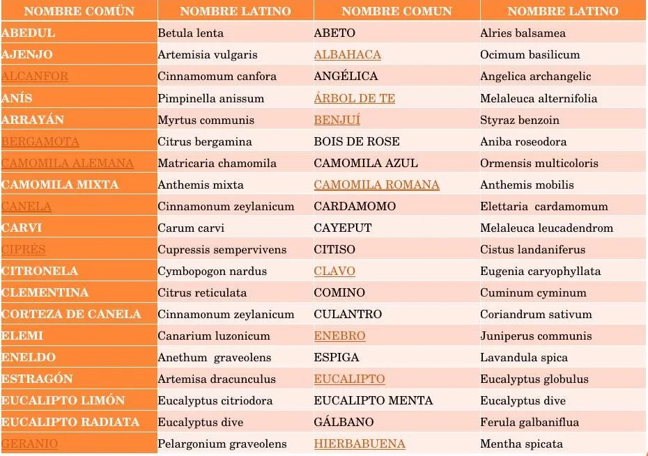

Módulo 07 · 20 minutos
Llamar a cada planta por su nombre
Al terminar, vas a poder registrar una planta con nombre común y nombre botánico, y explicar por qué esa precisión es importante.
«Manzanilla» no alcanza
Alguien pide manzanilla. La palabra parece clara hasta que distintas plantas aparecen bajo el mismo nombre. Se parecen, comparten usos populares o cambian de denominación según la región. Si la materia prima va a conservarse, compararse o emplearse más adelante, el nombre cotidiano deja abierta una pregunta peligrosa: ¿de cuál estamos hablando?
La identificación comienza con la observación, pero se vuelve comunicable cuando cada planta queda ligada a un nombre preciso.
Dos sistemas que deben convivir
El resulta cercano y práctico, pero no es único. Una especie puede tener varios nombres comunes y un mismo nombre puede aplicarse a más de una especie.
El busca resolver esa ambigüedad. Se escribe con dos palabras: primero el género, con inicial mayúscula; después la especie, en minúscula. Ambas se presentan en cursiva: Lavandula officinalis.
El género reúne especies próximas. La segunda palabra distingue una especie dentro de ese grupo. Anotar solo «Lavandula» mejora el registro, pero todavía no completa la identificación.

Mirá las parejas
Recorré la tabla por filas. ¿Qué cambia en la forma de escribir la columna botánica? Observá mayúsculas, minúsculas y el uso de dos palabras. Después cubrí una columna e intentá recuperar su pareja: el ejercicio muestra por qué conviene registrar ambos nombres.
El nombre también ordena el aceite
La precisión importa porque plantas cercanas no producen necesariamente el mismo material aromático. Existen distintos eucaliptos, tomillos y manzanillas. Un rótulo que dice solamente «eucalipto» o «tomillo» no permite reconstruir con seguridad qué planta originó el contenido.
También una misma especie puede ofrecer productos diferentes según la parte utilizada. Del naranjo pueden distinguirse materiales obtenidos de la cáscara del fruto, de las flores o de las hojas y ramas jóvenes. El nombre botánico identifica la planta; la parte vegetal completa la historia.
Nombre común
Ayuda a conversar y reconocer una planta en el entorno cercano. Debe registrarse, pero no reemplaza la identificación botánica.
Género y especie
Forman la unidad básica del nombre botánico: género con mayúscula y especie con minúscula.
Parte utilizada
Indica si el material proviene de hoja, flor, fruto, cáscara, madera, raíz u otra estructura.
Procedencia
Ubica la recolección. Dos muestras con el mismo nombre pueden necesitar registros separados si vienen de lugares distintos.
Determinar no es adivinar
La se apoya en caracteres visibles y en comparaciones ordenadas. Una clave de identificación propone decisiones sucesivas: una característica conduce a la siguiente hasta reducir las posibilidades.
Las pistas de los módulos anteriores ya forman parte de ese proceso: nervadura paralela o reticulada, hoja simple o compuesta, disposición de las flores, tipo de fruto, presencia de semillas. Ninguna palabra científica reemplaza la observación; el nombre es la conclusión de un recorrido de señales.
Cuando la identificación no es segura, el registro debe decirlo. Es preferible conservar una duda explícita que transformar una suposición en dato. Más adelante, el ejemplar guardado permitirá revisar la decisión.
Actividad · Un rótulo que pueda viajar
Elegí una planta aromática y prepará un rótulo provisional con:
- nombre común;
- nombre botánico, si está determinado;
- parte vegetal observada o utilizada;
- lugar donde fue encontrada;
- una característica que ayudó a reconocerla;
- una duda pendiente, si la hay.
Entregale el rótulo imaginariamente a alguien que no vio la planta. ¿Podría distinguir esa muestra de otra parecida?
Un nombre necesita una prueba
El rótulo ya puede decir qué planta creemos tener, dónde apareció y qué parte observamos. Falta conservar un ejemplar que permita comprobarlo en el futuro. Esa será la tarea del herbario: convertir una recolección pasajera en memoria ordenada.
Guardá esta estación
Cuando puedas explicar la idea central con tus propias palabras, marcá el módulo como completado.